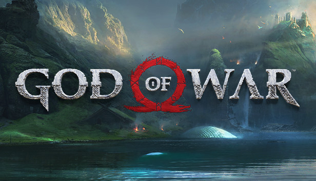

Características
- Combate visceral e brutal em terceira pessoa
- Narrativa épica baseada na mitologia grega e nórdica
- Quebra-cabeças ambientais desafiadores
- Chefes colossais inspirados em criaturas mitológicas
- Transição de vingança para redenção e paternidade
- Trilha sonora orquestral premiada
Armas
- Lâminas do Caos — correntes de fogo forjadas no submundo
- Machado Leviatã — arma mágica de gelo que retorna à mão
- Lâmina do Olimpo — espada capaz de matar deuses
- Espadas de Atena — lâminas duplas de energia divina
- Martelo de Thor — arma lendária dos nórdicos
Habilidades
- Força sobre-humana — capaz de derrubar titãs e deuses
- Resistência divina — imortalidade e regeneração
- Magia elemental — fogo, gelo e raio em combate
- Modo Fúria — aumento drástico de poder e velocidade
- Runas nórdicas — encantamentos de defesa e ataque
Benefícios de Jogar God of War (2018)

- Narrativa Emocionante e Madura
- Mundo Imersivo e Explorável
- Sistema de Combate Satisfatório
- Progressão e RPG
- Qualidade Técnica e Visual
- Rejogabilidade
- Valor Educacional (Cultural)
- Reconhecimento e Legado